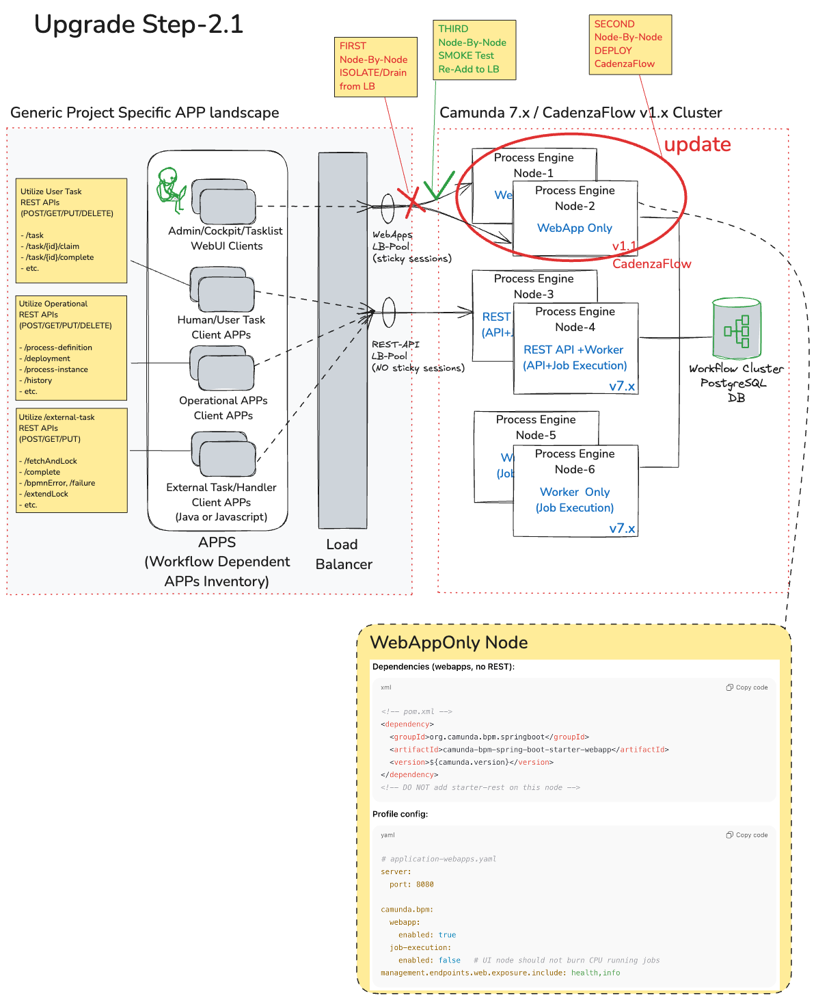

Transition Strategy & Upgrade MoP Blueprint: Camunda 7.x to CadenzaFlow v1.1.0
1. Executive Summary and Introduction
About CadenzaFlow v1.1.x
In response to Camunda's recent strategic shift - including the discontinuation of support for Camunda 7 Community Edition and renounce of some key principles - CadenzaFlow is a modern, stable fork of Camunda 7.24 with a robust Enterprise grade roadmap fully supported and maintained by PiA commited to retain the best features and to-be discountinued open source freedom of Camunda.
About DNext/DBSS (Digital BSS)
DNext (the Next) is the Cloud-Native Customer Engagement, Order Orchestration and Catalog/Inventory Management Platform by PiA that comprises suite of Lego-stye modules where each modules fulfills a specific functionality.
Within Vodafone Group, DNext is branded as DBSS , a globally registered and deployed Vodafone product, with its features and roadmap co-managed in partnership with Vodafone GCU.
Thus, DBSS leveraging CadenzaFlow as the orchestrator across Product, Service, and Resource Order Management components, will continue beyond October 2025 to uphold its core principles and maintain its commitment to open-source freedom for production use.
For further details, please refer to CadenzaFlow Web Site.
Baseline Facts/Accepted Constraints for CadenzaFlow v1.1.0 transition (vs Camunda 7.24 transition)
- The upcoming release CadenzaFlow v1.1.0 is delivered by PiA as a forked and package-renamed distribution of Camunda 7.24. Other than vendor branding and packaging differences,it remains functionally and non-functionally (until 2027) equivalent to Camunda 7.24.
- Accordingly, the same upgrade path and operational procedures applicable to a rolling update (for Cluster deployments) or a single node update for Camunda 7.24 also apply to CadenzaFlow v1.1.0.
- In other words, at a high level, the upgrade approach outlined in both Camunda docs.camunda.org/rolling-update or CadenzaFlow docs.camunda.org/rolling-update are valid/applicable.
- Fully on par with the standard minor Camunda release upgrade executions, the transition to CadenzaFlow v1.1.0 introduces NO expected changes to BPMN process models, client code (for external service task handler), or Workflow client integration APIs (start/stop/suspend/resume/query deploy Workflows/ProcessInstance information and alike).
- For sure, depending on the version gap between the current production Camunda release and CadenzaFlow v1.1.0 (Camunda 7.24 equivalent), all third-party software and library dependencies must be aligned accordingly. This is not specific to CadenzaFlow, but a standard requirement for any software upgrade.
- The minimum Camunda release to be considered for CadenzaFlow v1.1.0 transition must be 7.16. If NOT, prior to this MoP execution, the Camunda version upgrade to 7.16 must be addressed outside the context of this MoP Blueprtint document.
Purpose and Why this Upgrade Strategy & MoP Blueprint document?
-
Nevertheless, even though CadenzaFlow v1.1.0 being functionally equivalent to Camunda 7.24, this detailed Upgrade MoP Blueprint detailed in following sections is provided as a precautionary guideline, ensuring that standard pre-production checks and additional controls are performed.
-
This reflects the fact that CadenzaFlow is delivered by a different vendor, even though it is technically aligned and equivalent to the latest final (end of life) upstream Camunda community edition distribution.
-
Thus, the main objective is to provide a repeatable, low-risk detailed Camunda 7.x to CadenzaFlow v1.1.x transition MoP (Method of Procedure) and Process approach that can be used as a baseline for use by multiple IT teams.
2. Preparation before MoP Execution
This section outlines the recommended planning and alignment steps, along with optional staging validation, to be completed before MoP execution. Detailed execution procedures are provided in the next section 3. MoP Blueprint.
2.1. Plan (strategy)
This section defines the key planning and alignment requirements that must be settled ahead of production changes - planning & what to align on before anyone touches prod -
- Determine update strategy:
- Cluster, zero/low downtime: do a rolling update (DB first, then nodes one-by-one; only one minor version at a time). Approach outlined in both Camunda docs.camunda.org/rolling-update or CadenzaFlow docs.camunda.org/rolling-update are valid/applicable. Please refer to next section 3. Reference Scenario and Workflow Landscape for further details on an actual real-life
-
Single node or maintenance window: you can still apply DB scripts sequentially and then deploy the 7.24 app in one shot.
-
Workflow dependent APPs Inventory Planning: Determine/list and create an inventory of every impacted component:
- BSS/OSS applications that utilize Workflow Engine (Camunda) via deploymed workflows/BPMNs,
- Operational Apps, Web UIs that use related Camunda 7.x http-REST operational APIs
- External Task/Handler Client Apps (Java or Javascript based) that implement the logic of some deployed BPMN workflow tasks of type=external (task logic running outside of Camunda)
- Human/User Task Client Apps that use related Camunda 7.x http-REST operational APIs
-
All impacted set of software packages deployed as JARs onto Camunda worker nodes that implement the logic of some deployed BPMN workflow tasks of type=Java or Delegate Expression (task logic running on Camunda nodes)
-
Freeze Planning: Even though a rolling deployment at high level may be planned, still consider PLAN to freeze new BPMN/DMN deployments
-
Define and finalize go/no-go gates:
- Every DNext/DBSS release aligned with Camunda 7.24 and/or CadenzaFlow will have successfully passed system-level product tests, including:
- Successful deployment of all product BPMN flows
- Order Fulfillment test cases executed with external task handler components
- Panoramic Order Operations Web UI (and dependent back-end) tests, validating all operational APIs for process management and governance
- BackOffice User Ticket UI (and dependent back-end) tests, validating all human task management APIs
- Extend with customer-specific validations:
- Similarly for each impacted component as per Inventory Planning step above, determine, design a test plan and execute test cases that cover project-specific BPMN processes, integrations, and UI/operational flows to ensure fitness for your production environment.
- Please note that irrelevant of CadenzaFlow transition, for a major or multilevel Camunda upgrade, the same should be applied.
2.2. Align (environment, 3PP SW/LIB dependencies)
- Read “minor update” notes for each hop (7.20→7.21, …, 7.23→7.24/CadenzaFlow 1.0) and extract any mandatory steps or config toggles.
-
Sources: docs.cadenzaflow.com/update OR docs.camunda.org/update (equivalent to CadenzaFlow documentation)
-
Determine current Camunda version:
-
The minimum Camunda release to be considered for CadenzaFlow v1.1.0 transition must be 7.16. If NOT, prior to MoP execution, the Camunda version upgrade to 7.16 must be addressed.
-
Check supported environments and 3PP package/library versions for CadenzaFlow v1.1.0 (equivalent to Camunda 7.24) (JDK, app server, DB). Some examples: Java 11/17/21; Tomcat 9/10.1; PostgreSQL 14-17; etc.
- Sources: docs.cadenzaflow.com/supported-environments OR docs.camunda.org/supported-environments (equivalent to CadenzaFlow documentation)
-
!!! Important: Any environment mismatch is a to be planned and MUST be addressed/resolved prior to MoP Execution. Please refer to next 3. MoP Blueprint section Pre-Checks
-
External Task Clients Lib/Package Version Alignment: Workflows BPMNs with Service Tasks of type=External allows execution/handling of task logic to be executed outside of Workflow Engine (remote). Such clients can be developed with Java or NodeJS.
- Java External Task clients. Camunda provides Spring Boot Starter for the External Task Clients. Check for Springboot version compatibility.
- Sources: docs.cadenzaflow.com/spring-boot-integration/version-compatibility OR docs.camunda.org/spring-boot-integration/version-compatibility (equivalent to CadenzaFlow documentation)
-
Javascript/NodeJS External Task clients. Check for NodeJS version compatibility.
- Sources: docs.cadenzaflow.com/ext-client-NodeJS/compatibility-matrix/ OR docs.camunda.org/ext-client-NodeJS/compatibility-matrix/ (equivalent to CadenzaFlow documentation)
-
Plan database migrations: Equivalent to Camunda, CadenzaFlow requires sequential DB schema updates per minor; via Liquibase with curated changelog (available since 7.16) prepare the liquibase execution envrinment to apply them in order.
- Sources: docs.cadenzaflow.com/database-schema OR docs.camunda.org/database-schema (equivalent to CadenzaFlow documentation)
- Heads-up about current Camunda in-production version: Camunda 7.24 is the last minor of Camunda 7 (CE reaches end of updates around Oct 2025). CadenzaFlow v1.1.0 is equivalent to Camunda 7.24.
-
So, if current Camunda version in production is already v7.24, THEN no need for running DB migration scripts. Leaving the already Camunda 7.24 level DB intact, and upgrading the Workflow Engine node executables with CadenzaFlow v1.1.0 is enough.
-
Risk & rollback: For muti-level sequential DB upgrades, CadenzaFlow (equivalent to Camunda) guarantees DB schema backward compatibility (old engine working on new schema is OK), which simplifies rollback to previous binaries if needed. Still plan for a full DB backup/restore.
2.3. RACI
The following is a skeleton RACI. The following RACI must be tailored and approved to match your IT organization.
| Activity | Change Mgr | DB Admin | App/Workflow Engine Owner | Platform/Site Engineer | QA/Test | Security |
|---|---|---|---|---|---|---|
| Approve window | A | I | I | I | I | C |
| Pre-checks & freeze | R | C | R | C | C | C |
| DB backup & Liquibase run | I | R/A | I | C | I | I |
| Node rotation / deploy | I | I | R | R/A | I | I |
| Post-deploy validation | I | C | R | C | R/A | C |
| Decision (Go/No-Go) | A | C | C | C | C | C |
| Rollback (if needed) | A | R | R | R | C | I |
R = Responsible • A = Accountable • C = Consulted • I = Informed
2.4. Prove in Staging (dry-run & rehearsal)
Regarding the detailed MoP Blueprint provided in next section 3. MoP Blueprint, consider planning for prove in staging and rehersals.
- Clone prod setup (same JDK, DB major/minor, app server, plugins, telemetry, history levels, auth).
- Run/Execute required environment, 3PP package/library version upgrades as per details provided in previous section 2.2.).
- Run DB migrations sequentially (7.21 → 7.22 → 7.23 → 7.24)
- Build/re-package external Task worker/handler client app(s): Build/package with CadenzaFlow v1.1 (same as Camunda 7.24) compliant versions of SpringBoot and/or NodeJS as per details provided in previous section 2.2.
- Functional & non-functional tests: deploy typical processes, start/complete instances, check job executor throughput, timers, history writes, incidents, authorization checks, and any Cockpit/Admin webapp plugins.
- Rehearsal activities: Detail and plan for additional rehearsal activities of the MOP Blueprint detailed in next section 3. MoP Blueprint below (simulate Load Balancer drain, node rotation), measure timings.
3. Reference Scenario and Workflow Landscape
For the sake of practicality, clarity and exemplification, the MoP is written considering the following scenario and assumptions. Typically the actual deployments may be simpler or may slightly vary and thus the MoP provided in further sections is expected to be adapted by the relevant IT teams to suit the actual production environment.
- No Environment 3PP component/library version upgrade details as detailed in previous section 2. Preparation before MoP Execution provided in this MoP. As a prerequisite, all related prerequisite alignment has to be executed business as usual, prior to the application of this MoP.
- An upgrade is envisioned from Camunda Engine binaries from 7.20 → CadenzaFlow v1.1.0 (equivalent to Camunda7.24). No new features used until all nodes are on CadenzaFlow v1.1.0.
- DB schema upgraded explicitly&sequentially to CadenzaFlow v1.1.0 using Liquibase (equivalent to Camunda 7.24). More clearly, if current version is 7.20, sequentially all DB upgrades will be executed sequentially using the Liquibase and provided set of scripts: 7.20 → 7.21, 7.21 → 7.22, 7.22 → 7.23, 7.23 → 7.24 (CadenzaFlow v1.1 level)
- An upgrade is envisioned on a 6 node Camunda Cluster, where:
- WebApps-Only Node-1: Node hosts only Camunda Web Apps (Admin/Tasklist/Cockpit)
- WebApps-Only Node-2: Node hosts only Camunda Web Apps (Admin/Tasklist/Cockpit)
- API / Job Executor Node-3: Node hosts Camunda http-REST APIs, Job Acquisition/Execution
- API / Job Executor Node-4: Node hosts Camunda http-REST APIs, Job Acquisition/Execution
- Worker Only/Job Executor Node-5: Node hosts only Job Acquisition/Execution
- Worker Only/Job Executor Node-6: Node hosts only Job Acquisition/Execution
- Rollout style is described for a cluster deployment. But if it is embedded/single node, this MoP can be applied for that single node in a simplified manner.
The following diagram depicts the envisioned sample scenario as detailed above.
Figure: Workflow Landscape Overview
4. MoP Upgrade
- Change ID#: ___
- Environment(s): [Dev/Test/PreProd/Prod]
- Region/Upgrade Window:
- Timezone: ____
- Start: [YYYY/MM/DD HH:MM:SS ]
- End: [YYYY/MM/DD HH:MM:SS ]
- Rollout Style:
- [ ] Rolling (cluster)
- [ ] Maintenance window (single node)
- Approver: ___
4.1. Pre-Checks (must be ALL green)
- [ ] Backups: Verified restore of the Camunda DB snapshot.
- [ ] Freeze: Pause new BPMN/DMN deployments & mass operations during upgrade window.
- [ ] Env compatibility: JDK, app server, drivers, and DB versions updated to supported by 7.24.
- [ ] Artifacts staged: CadenzaFlow v1.1 app images/bundles; Liquibase CLI; etc.
- [ ] Auto-DDL off:
databaseSchemaUpdate=false. Check if databaseSchemaUpdate=false in ALL apps so that Camunda doesn’t try to create/alter tables itself - IF Springboot => application.yaml
camunda: bpm: database: schema-update: false - IF standalone Tomcat => bpm-platform.xml
<process-engine name="default"> <property name="databaseSchemaUpdate">false</property> <!-- other properties --> </process-engine> - IF embedded => process-engine.cfg.xml
<beans> <bean id="processEngineConfiguration" class="org.camunda.bpm.engine.impl.cfg.StandaloneProcessEngineConfiguration"> <property name="databaseSchemaUpdate" value="false"/> <!-- other properties --> </bean> </beans> - IF K8s / Containerized SpringBoot => env var mapped to SPringboot property
-e CAMUNDA_BPM_DATABASE_SCHEMA_UPDATE=false - [ ] Monitoring: Dashboards/alerts for job executor, incidents, external task failures running/ready.
- [ ] Test plan ready: Synthetic flows + go/no-go criteria (see Acceptance below).
4.2. Execution (tick as you go)
Step-1: Database Schema Upgrade (no binary change)
The first step consists of updating the database schema to CadenzaFlow v1.1.0 (equivalent to Camunda 7.24. Information on where to find the update scripts and how to apply them can be found in the CadenzaFlow documentation on how to perform updates.
When this step completed, the database schema version will be upgraded to CadenzaFlow v1.1 level (Camunda 7,24) while the Camunda Nodes are still in their current versions (not upgraded).
- [ ] 1. Announce start; set change to In Progress.
- [ ] 2. Pause all risky traffic (bulk ops/migrations) during upgrade.
- [ ] 3. Backup DB (record snapshot ID/TS: ___).
- [ ] 4. Liquibase update to 7.24 (sequential):
# Preconditions:
# - Production Camunda version is 7.minor (minor ≥ 16). See section 2. for details.
LET currentMinor ← [read from Production] # e.g., 20 for 7.20
## BASELINE liquibase to be on the safe side
liquibase --defaultsFile=liquibase.properties changelogSyncToTag 7.20.0
## Preview everything needed to reach 7.24
liquibase --defaultsFile=liquibase.properties updateToTagSql 7.24.0 > /tmp/camunda-7.24.sql
## Execute the migration
liquibase --defaultsFile=liquibase.properties updateToTag 7.24.0
- [ ] 5. Go/No-Go #1 (DB only). If No-Go, restore snapshot OR execute Rollback Plan below.
The following Diagram depicts the impacted sub domain in this step.
Figure: Upgrade Step-1
Step-2: Application / Nodes Upgrade (by pools of node types)
Considering a rolling update and the MoP Blueprint: Reference Scenario detailed in section 3.1 the order in which nodes considering their types will be as the following: * Step-2.1. WebApps Only Nodes Upgrade ( we prefer to assure at least one Job Executor active at all times) * Step-2.2. REST API+Worker Nodes Upgrade * Step-2.3. Worker Only Nodes Upgrade
Step-2.1: WebApps Only Nodes Upgrade
For nodes Node-1, Node-2 accessible via LoadBalancer behind WebApps LB-Pool with sticky sessions: * [ ] 1. Prep: Ensure databaseSchemaUpdate=false is live in configs. Optionally reduce session TTL (e.g., to 5-10 min) before the window. * [ ] 2. Drain Node from LB (no new sessions); wait until active sessions ≤ threshold or TTL expires. * [ ] 3. Stop Node: Stop service/shutdown * [ ] 4. Deploy CadenzaFlow on Node; start service with WebApps Only config. * [ ] 5. Smoke test Node: login to Cockpit/Tasklist, check version banner, validate plugins. * [ ] 6. Re-add Node to LB; Observe X min (http status codes 200/5xx, UX checks). * [ ] 7. Repeat steps 2-6 for next Node; exit if ALL Nodes completed
The following Diagram depicts the impacted sub domain in this step.

Figure: Upgrade Step-2.1
Step-2.2: REST API+Worker Nodes Upgrade
For nodes Node-3, Node-4 accessible via LoadBalancer behind REST-API LB-Pool with NO sticky sessions:
* [ ] 1. Ensure capacity: For rolling live upgrade, ensure there is at least one other Worker Node (Node with Job Executor) remains active at all times (either oneOf {Node-3, Node-4} or oneOf {Node-5, Node-6}).
* [ ] 2. Drain Node from LB; wait for in-flight requests to complete (zero active).
* [ ] 3. Stop Node: Stop service/shutdown (or quiesce JobExecutor first if a controlled shutdown is used/applicable)
* [ ] 4. Deploy CadenzaFlow on Node; start service with REST API+Worker config.
* [ ] 5. Smoke test Node:
- REST: GET /engine, start a trivial process instance, GET /engine/version.
- JobExecutor: monitor job acquisition/backlog, failed jobs, incident rate for X min.
* [ ] 6. Re-add Node to LB; Observe X min ((throughput, errors, incidents).
* [ ] 7. Repeat steps 2-6 for next Node; exit if ALL Nodes completed
The following Diagram depicts the impacted sub domain in this step.

Figure: Upgrade Step-2.2
Step-2.3: Worker Only Nodes Upgrade
For nodes Node-5, Node-6 (no LB-Load Balancer; these nodes are Worker/JobExecutor only) * [ ] 1. Ensure capacity: For rolling live upgrade, ensure there is at least one other Worker Node (Node with Job Executor) remains active at all times (either oneOf {Node-3, Node-4} or oneOf {Node-5, Node-6}). * [ ] 2. Isolate Node; mark under maintenance in monitoring; stop service (or quiesce JE first if you use a controlled shutdown). * [ ] 3. Stop Node: Stop service/shutdown (or quiesce JobExecutor first if a controlled shutdown is used/applicable) * [ ] 4. Deploy CadenzaFlow on Node; start service with Worker Only config. * [ ] 5. Smoke test Node: - JobExecutor: monitor job acquisition/backlog, failed jobs, incident rate for X min. * [ ] 6. Repeat steps 2-5 for next Node; exit if ALL Nodes completed
The following Diagram depicts the impacted sub domain in this step.
Figure: Upgrade Step-2.3
Step-3: Project External APPs Update
Step-3.1: Update External Task/Handler Client APPs (align, upgrade, restart)
Scope: All project specific external task Task/Handler client apps (Java/Spring Boot or Node.js) that fetch-and-lock and execute work in their own process memory.
Prepare & align (no restarts yet)
- [ ] Inventory workers by topic(s), namespace, and deployment (Kubernetes/VM/service).
- [ ] External Task Clients Lib/Package Version Alignment:
- Java: set External Task Client library to 7.24.x (match engine).
- Node.js: set package version to 7.24.x (match engine).
- [ ] Runtime baselines: confirm supported JDK LTS for Java workers and Node.js LTS for JS workers.
- [ ] Config sanity:
baseUrlpoints to REST LB; TLS/certs OK; auth tokens/creds valid. - [ ] Fetch-and-lock parameters: standardize
maxTasks,lockDuration,asyncResponseTimeout, and backoff/jitter. - [ ] Observability: dashboards/alerts for worker success/failure counts, retries, and latency.
Rolling upgrade (per APP)
- [ ] Canary one APP deployment at a time
1) scale down (or drain) one instance;
2) deploy new build with aligned client lib/package + runtime;
3) start; confirm fetch-and-lock → complete loop succeeds on a known task. - [ ] Ramp: roll remaining replicas gradually; keep at least one healthy worker per critical topic at all times.
- [ ] Throughput guardrails: temporarily reduce
maxTasksduring rollout; restore once stable. - [ ] Error budget: watch
BPMN Error/Incidentspikes; halt ramp if thresholds are exceeded.
Worker readiness (pre-validation)
- [ ] Topic coverage: each critical topic has ≥1 healthy worker consuming.
- [ ] Functional probe: canary task fetch-and-lock → complete succeeds.
- [ ] Health signals: liveness/readiness green; no auth/timeout noise in logs.
- [ ] Config pinned: versions/params checked in to IaC (Helm/Ansible/Terraform); image tags pinned.
Step-3.2: Update Other Project Specific Operational Client APPs if exists
!!! This step is optional if DBSS/DNext DPANO-Panaromic Operations UI is being used for and2end process management operations.
- Scope: All project specific OPERATIONAL client APPs that use Camunda http-REST Operational API and now will be accessing the already deployed/activate (via Step-2) CadenzaFlow REST-APIs
- Approach: Follow similar approach to Step-3
Step-3.3: Update Other Project Specific Human/User Task Client APPs if exists
!!! This step is optional if DBSS/DNext DBO-UserTicket-UI (BackOffice-UI) is being used for and2end user task interaction management.
- Scope: All project specific Human/User Task Mgmt client APPs that use Camunda http-REST Operational (/task related) API subset and now will be accessing the already deployed/activate (via Step-2) CadenzaFlow REST-APIs
- Approach: Follow similar approach to Step-3
The following Diagram depicts the impacted sub domain in this step.
Figure: Upgrade Step-3
Step-4 - Validation & Handback
- [ ] WebApps Cockpit/Admin/TaskList & plugin checks: access OK; plugin UIs render; version banner shows CadenzaFlow v1.1
- [ ] Regression-test a representative subset of critical workflows by starting process instances and verifying end-to-end execution (tasks, timers, external tasks, history). (Process definition keys: ___)
- [ ] System-wide soak (10-15 min): failed jobs/incidents stable; retries normal; worker error rate steady; job backlog not growing.
- [ ] Throughput restore: undo any temporary external task/handler client throttling settings during the rollout. For example;
- maxTasks: set the worker’s “tasks per fetch” back to its normal value (e.g., from 5 → 20).
- backoff: set the worker’s delay between polls/errors back to normal (e.g., from 2000 ms → 200 ms).
- [ ] Check/Confirm SLO-Objectives (95%–99%) hold = after restoring normal throughput, verify your latency/error targets are still met
- end-to-end latency for key workflows are ≤ your targets.
- Error rate/5xx, failed jobs/incidents, and job backlog remain stable (not growing).
- [ ] Unfreeze deployments once every node is on 7.24.
- [ ] Go/No-Go #2: If No-Go, execute Rollback Plan below.
- [ ] Close change; circulate completion note + metrics.
4.3. Post verifications; Go/No-Go Criteria
The following are examples. The exact list of items must be determined by project teams. All items below must be GREEN. If any item fails or No-Go, execute Rollback Plan below.
FOR EACH impacted APP, check
Functionality
- [ ] All automated unit tests pass.
- [ ] All automated system/end2end product tests.
- [ ] Outcomes match expected results (response payloads, follow-up expected checks, task completion, variables, message/timer paths, etc.).
- [ ] end-to-end latency is as expected 95% of requests ≤ ___ ms.
- [ ] Timers fire within ± ___ sec of schedule; no drift accumulation.
- [ ] History/audit events persisted and visible in queries/Cockpit.
Reliability & incidents
- [ ] Incidents/min ≤ ___, Failed jobs = 0, Retries stable after ___ min soak.
- [ ] Job backlog not growing; acquisition cycles steady.
- [ ] External task task/handler client APPs: success rate ≥ ___%; no auth/timeout spikes.
Performance & capacity
- [ ] Throughput under representative load ≥ ___ rps (or ___ process instances/min).
- [ ] DB CPU/IO within safe headroom (< ___%).
Security & access
- [ ] No auth/authorization regressions on REST/Cockpit/Admin; SLOs unchanged.
- [ ] TLS/certs valid; no new warnings in logs.
Operations & Observability
- [ ] Dashboards/alerts healthy (errors, latency, queue depth, GC).
- [ ] No elevated 5xx from REST LB; WebApps UX smoke passes.
Evidence & sign-off
-
[ ] Attach links/screenshots: dashboards, logs,
ACT_GE_SCHEMA_LOGtop row, Liquibase tag. -
Sign-offs: App Owner ✅ • SRE/Platform ✅ • DBA ✅ • QA/Test ✅
NO-GO / Rollback Decision
- Triggers Rollback: failed smoke tests, incident spike (> ___/min), growing job backlog, auth/timeout storms, or DB migration errors.
- Timebox: if stabilization exceeds ___ min after any pool rollout, initiate rollback.
- If NO-GO & Rollback: Notify upgrade war-room/stakeholders about NO-GO & Rollback decision.
- If SUCCESS: Notify upgrade war-room/stakeholders about GO decision.
5. MoP Rollback
5.1. Pre-Checks
- [ ] Freeze: Pause new BPMN/DMN deployments & mass operations during *upgrade window. (already done prior to upgrade, see section 4.1.)
- [ ] Snapshot logs/metrics for forensics; record current
ACT_GE_SCHEMA_LOGtop row and Liquibase tag. - [ ] Notify upgrade war-room/stakeholders about Rollback start.
5.2. Binary backout or Full restore
Determine if binary Binary backout or Full restore
5.2.1. Binary backout
- [ ] Backout Order: (prioritize restoring stable job execution)
- [ ] REST API+Worker Nodes
- [ ] Worker-Only Nodes
- [ ] WebApps Only Nodes
- Applicable forREST API nodes and WebApps nodes, for each LB pool: drain → deploy 7.20 images → start → smoke → re-add to LB. (reverse of approach used for upgrade detailed in orevious section 4.)
- [ ] Keep upgraded schema; do not run Liquibase rollback.
- [ ] External apps; External task/handler client APPs, and if exists other project specific Operational Client APPs, and if exists other project specific Human/User Task Client APPs can stay on 7.24 client libs (7.x compatible).
- Only if incompatibilities observed (such as there is a BIG delta between CadenzaFlow v1.1/Camunda 7.24 versions versus previous product Client Apps Camunda version), downgrade clients to their previous 7.x during the same wave.
5.2.2. Full restore
Alternatively, instead of 5.2 Binary backout, a Full restore may be preferred.
- Stop all apps (REST, JE, WebApps, external workers).
- Restore DB snapshot [snapshot ID ___] (includes DATABASECHANGELOG* tables).
- Verify ACT_GE_SCHEMA_LOG shows pre-upgrade version; Liquibase state matches.
- ACT_GE_SCHEMA_LOG is the table where Camunda records each schema update. Run following query to make sure that restored DB snapshot is OK
SELECT VERSION_, TIMESTAMP_
FROM ACT_GE_SCHEMA_LOG
ORDER BY TIMESTAMP_ DESC
LIMIT 1;
-- Expect VERSION_ = '7.20.x' before upgrade (or after rollback)
- Re-enable project specific APPs and project specific external task/handler client APPs last; verify fetch-and-lock.
5.3. Post verifications
- [ ] Start baseline test flow; confirm incidents = 0, timers fire, job executor stable, backlog not growing.
- [ ] Cockpit/Admin reachable; version banner shows 7.20.x.
- [ ] Close change as Rolled Back; attach metrics, root-cause notes, and next-steps plan.
- [ ] Notify upgrade war-room/stakeholders about NO-GO & Rollback decision.
5.4. Guardrails & notes
- Prefer snapshot restore over
liquibase rollbackunless you have authored rollbacks for every changeSet. - Keep
databaseSchemaUpdate=false- don't let Camunda engines attempt schema changes during rollback. - Document the forward-fix plan (what must change before the next upgrade attempt) and schedule a new window.
6. DBSS/DNext: Transition Strategy, MoP and Release Validations (Go/No-Go) to CadenzaFlow
6.1. DBSS/DNext Reference Scenarion and Workflow Landscape
The detailed MoP blueprint and reference scenario provided in previous sections also APPLY to DBSS/DNext.
Compared to previous Figure: Workflow Landscape Overview provided in section 3. as a reference Landscape, the same principles also apply for DBSS/DNext. The following diagram depicts the workflow landscape from DBSS/DNext perspective. It shall be noted that considering the impacted components inventory for DBSS/DNext, there is NO direct dependency of DNext components to Camunda APIs. So, adaptation of DNext Decoupling Common Framework Components decouples the higher level of actual BSS DBSS/DNExt App Components like Order Mgmt, Operational Web UIs etc.
Figure: DNext Workflow Landscape Overview
So, just like for any Camunda upgrade that is certified and deaclared to be supported for DBSS/DNext, Cadenzaflow will also be verified as detailed in next section prior to DBSS/Dnext Release that supports CadenzaFlow.
6.2. DBSS/DNext Release Verifiations
In line with the DBSS/DNext specific workflow landscape, after the execution of the MoP blueprint as detailed in previous sections, the following will be tested prior to DNext release that supports CadenzaFlow.
DNext Decoupling Common Framework Components Validations
- !!! SINCE ALL DBSS/DNext upper BSS/OSS business capability exposing API and Web UI layers depend on Common Framework Components, the completion of the validations in this section are vital and the MOST critical.
- ALL OF THE FOLLOWING MUST PASS
DBPM-Operate-MS Validations
- [ ] All automated unit tests pass.
- [ ] Component integration tests pass: All REST APIs exposed/served by DBPM-Operate-MS integrated to CadenzaFlow REST-APIs match expected results
- [ ] Outcomes match expected results (unit test response payloads, follow-up expected checks, variables, message/timer paths, etc.).
- [ ] end-to-end latency is as expected 95% of requests ≤ ___ ms.
DBPM-UserTask-MS Validations
- [ ] All automated unit tests pass.
- [ ] Component integration tests pass: All REST APIs exposed/served by DBPM-Operate-MS integrated to CadenzaFlow REST-APIs match expected results
- [ ] Outcomes match expected results (unit test response payloads, follow-up expected checks, task completion, variables, message/timer paths, etc.).
- [ ] end-to-end latency is as expected 95% of requests ≤ ___ ms.
DNext Common-LIB Validations
- [ ] All automated unit tests pass.
- [ ] Component integration tests pass: Process instantiation, external task/handler client API calls
- [ ] Outcomes match expected results (unit test response payloads, follow-up expected checks, task completion, variables, message/timer paths, etc.).
- [ ] end-to-end latency is as expected 95% of requests ≤ ___ ms.
DNext Order Mgmt Apps Validations
Via the DNext-Common-LIB decoupling these components from workflow management, these APPs act as external task/handler client APPs and are responsible for instantiating the Order ROOT DNext order-process, responsible for starting the catalog driven order fulfillment orchestration.
FOR EACH-OFF { DPOM-OFS, DSOM-OFS, DROM-OFS }
- [ ] 1. All automated unit tests pass.
- [ ] 2. All end2end automated Order Mgmt Tests pass: As an example, single and a LOAD of orders generated on standard automated pre-release tests of DBSS/DNext that contains a complex order of sub order items
- Survelliance Bundle (with in-bundle dependency of sub bundle items)
- Additional 3 add-ons with cascade dependency
- Additional 3 add-ons with parallel dependency
- Other test orders that also generate nested (dependent) service and/or resource orders
- [ ] 3. Outcomes match expected results (orders fulfilled as expected, no BPMN errors, no incidents).
- [ ] 4. end-to-end latency is as expected 95% of requests ≤ ___ ms.
- [ ] 5. end-to-end throughput as expected such as ** > ___ TPS.
- [ ] 6. CancelOrder: Apply 2.-5. for cancelOrder
- [ ] 7. In-Flight-OrderChange: Apply automated tests. Outcomes match expected results (in-flight-order change requests fulfilled as expected, no BPMN errors, no incidents).
Operations & Observability Validations
- [ ] DPANO-UI is accessible and can access CadenzaFlow
- [ ] DPANO-UI tests Repeat/rerun a subset of some successful tests from DNext Order Mgmt Apps Validations. Verify:
- DPANO-UI can access all order information
- DPANO-UI can access all order related process instance information
- DPANO-UI can view executed/running provces instance diagrams
- DPANO-UI can access/alter variables of process instances
- DPANO-UI can suspend/resume/kill process instances
- DPANO-UI can access/manage process instance related errors/incidents
Human/User Task (BackOffice) Validations
- [ ] DBO-UserTicket-UI is accessible and can access CadenzaFlow
- [ ] DBO-User-Ticket tests Run DNext release tests for human task managent (creating process instance with user tasks and backing forms configured). Verify:
- Generated Tasks accessible/viewed via DBO-UserTicket-UI
- Task can be claimed via DBO-UserTicket-UI
- Task can be completed via DBO-UserTicket-UI (interacting with backing form)
- Form Data can be saved (without completion) via DBO-UserTicket-UI
- Saved From Dat for the task can be retrieved and Task can be completed via DBO-UserTicket-UI (interacting with backing form)
6.4. Evidence & sign-off (Go/No-Go for release)
- [ ] Test report: results, screenshots
- [ ] Go/No-Go for DBSS/DNext Release based on results